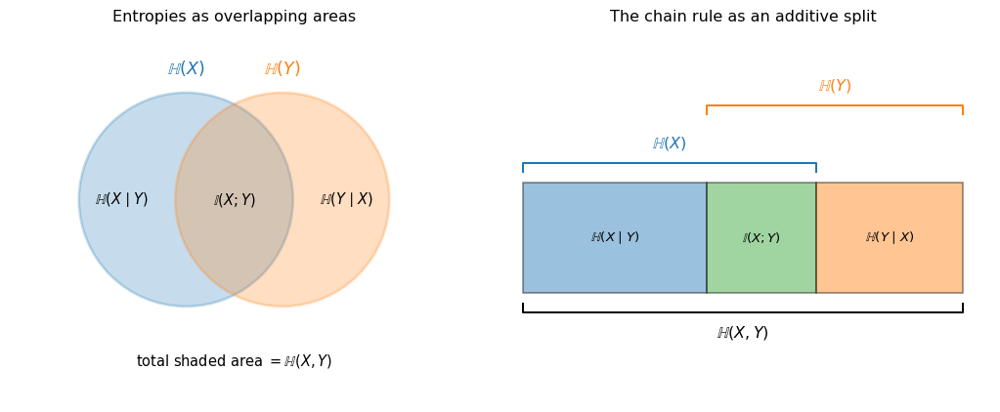

Under active development. A stable version is expected in November 2026. Feedback is welcome by email or via GitHub issues.
1 Information Theory
1.1 Overview
Information theory provides the language for quantifying uncertainty, surprise, and discrepancy between distributions. In machine learning and econometrics, these ideas appear whenever we estimate likelihood-based models, compare predictive densities, or ask how informative one variable is about another.
This chapter introduces four core objects:
Entropy for measuring “uncertainty” in a distribution
Cross-entropy for measuring expected negative log-likelihood under a candidate model
Kullback-Leibler (KL) divergence for comparing a model distribution to a reference distribution
Mutual information for measuring dependence, including nonlinear dependence
All four are population quantities determined by probability distributions rather than statistics computed directly from a sample: entropy is a property of a distribution in the same way variance is, while KL divergence is a property of a pair of distributions. We introduce sample counterparts only when connecting KL divergence to maximum likelihood and when illustrating how mutual information is estimated.
Because the distinction between a random variable and its realized value does real work in every definition below, we fix the book’s notational convention at the outset. Uppercase Latin letters such as X denote random variables; lowercase letters such as x denote realized values, including the arguments of densities, mass functions, and sums over outcomes; and a hat marks a quantity computed from data. Greek letters keep their case whether they denote parameters, such as \theta, or random disturbances, such as \varepsilon, as is standard in econometrics. The same rule applies to time series: X_t is the random variable at time t and x_t its realization. This convention holds throughout the book.
Why this matters for econometricians
These concepts underlie:
likelihood-based estimation and maximum likelihood
probabilistic forecasting and forecast evaluation
fitting models with penalties that discourage excessive complexity, and choosing among candidate models—recurring themes from the next chapter onwards
understanding dependence beyond correlation
These ideas are not purely abstract. They also appear in applied finance; for an example using entropy-based concepts in financial research, see Chabi-Yo and Colacito (2019).
1.2 Roadmap
The chapter is organized around one main econometric question: how should we quantify the uncertainty in a probability distribution, and how should we measure the distance between two candidate distributions for the same data—for instance, between the distribution implied by a parametric model and the true data-generating distribution?
We start with entropy, which measures the uncertainty in a single distribution in a more general way than variance.
We then move to cross-entropy, which has a direct interpretation as expected negative log-likelihood.
This leads naturally to KL divergence, the key notion of discrepancy between two distributions.
We use this to connect information theory to maximum likelihood estimation (MLE).
Finally, we study joint entropy, conditional entropy, and mutual information to measure dependence between variables.
1.3 Measuring Distributional Differences
Central Question: How can we measure how much two distributions p and q differ?
This question appears repeatedly in econometrics. When we estimate a parametric model, we are implicitly asking whether its distribution is close to the data-generating process. When we compare distribution forecasts (a task we take up in detail in Chapter 4), we are again comparing distributions rather than just point predictions.
We need a divergence measure D such that:
D(p,q) \geq 0 with equality if and only if p=q
D should be invariant under one-to-one changes of variables of the observation; e.g., if X has density p(x) and we define Y = (X-\mu)/\sigma, the divergence between the distributions of Y under two probability measures should not depend on the scale \sigma or shift \mu. (A note for econometricians: this transforms the data, not the model parameters—it is not the reparameterization of \theta familiar from estimation theory, although the literature sometimes uses that word for both.)
Question for Reflection
Would the ratio of variances be a good measure to compare two distributions?
Suggested Answer
No, the ratio of variances would not be a good general measure for comparing distributions.
Problems with variance ratios:
Ignores shape: Two distributions can have identical variances but completely different shapes (e.g., uniform vs. bimodal)
Ignores location: Distributions with same variance but different means would appear “identical”
Limited information: Variance only captures second moments, missing higher-order features
Example: Consider:
p: Uniform distribution on [-\sqrt{3}, \sqrt{3}] (variance = 1)
q: Normal distribution N(0,1) (variance = 1)
The variance ratio is 1, suggesting the two are equivalent, yet their shapes differ completely.
Note that unlike a metric, we don’t require symmetry or the triangle inequality.
1.4 Entropy (Discrete Case)
The idea is to quantify the uncertainty or information content of a random variable X. As a first intuition, think of entropy \mathbb{H} as a variance-like summary of uncertainty that takes into account the entire shape of the distribution of X, including the tails. The analogy has one limit worth flagging immediately: variance depends on the values X takes, whereas discrete entropy depends only on the probabilities. Relabeling the outcomes \{1,2,3\} as \{1,100,10000\} leaves the entropy unchanged while changing the variance enormously.
Let X be discrete with probability mass function p(x), and let \mathcal{X} denote the set of values X can take. Its support is \{x \in \mathcal{X} : p(x)>0\}, which may be a strict subset of \mathcal{X}.
A useful building block is the self-information (or surprisal) of an outcome x:
I(x) := -\log p(x).
Rare outcomes (small p(x)) carry large I(x), matching the “surprise” language of the Overview. Entropy is then the expected surprisal,
with the convention 0\log 0 := 0 (justified by \lim_{t\to 0^+} t\log t = 0). We may equivalently write \mathbb{H}(p).
Note
Entropy is built from a logarithm, so its numerical value depends on the base of that logarithm. Changing the base only rescales everything by a positive constant: classical information theory often works with \log_2, which divides all the values below by \log 2 \approx 0.69. We use the natural logarithm throughout, because it keeps the connection to the log-likelihood and its derivatives clean from Section 1.9 onwards. Since the base only rescales, no comparison or ranking in this chapter depends on the choice.
Binary Case
Let’s start with the binary case, where X can take two values (0 and 1) with probabilities p(0)=1-\theta and p(1)=\theta.
Definition: Bernoulli Entropy
For a Bernoulli random variable X with \mathbb{P}(X=1)=\theta, the entropy is:
Writing the entropy as a function of the parameter, \mathbb{H}(\theta), is a convenient shorthand for \mathbb{H}(X) with X \sim \text{Bernoulli}(\theta); we use it only in this binary example.
The following figure plots this entropy over the whole range of \theta.
Figure 1.1: Entropy of a Bernoulli random variable as a function of the success probability \theta, using natural logarithms. The dashed lines mark the maximizer \theta=0.5 and the maximum value \log 2 \approx 0.69. Entropy approaches zero as \theta approaches either endpoint, where the outcome becomes deterministic.
As Figure 1.1 shows, maximum uncertainty occurs at \theta = 0.5, where the outcome is most unpredictable, and entropy falls away symmetrically towards zero as \theta approaches either endpoint.
Formal Derivation of Maximum
Entropy \mathbb{H}(\theta) is maximized at \theta=0.5:
The derivative of \mathbb{H}(\theta) with respect to \theta is:
The discrete entropy formula does not apply directly when X is continuous, because individual outcomes then have probability zero. We replace the sum over probability masses by an integral over the density p(x) and define:
h(X) := -\int p(x)\log p(x)\,dx
A note on the integration range: when we leave the limits unspecified, as here, the integral runs over the whole real line, with the integrand set to zero wherever p(x)=0—the continuous counterpart of the convention 0\log 0 := 0 from the discrete case—so that only the support of p, the set where p(x)>0, contributes. When we work with a concrete density that is positive on all of \mathbb{R}, such as the Gaussian in the exercises, we write \int_{\mathbb{R}} explicitly.
Example: Gaussian Entropy
For a Gaussian X \sim \mathcal{N}(\mu,\sigma^2), the entropy is:
h(X) = \frac{1}{2}\log(2\pi e\sigma^2)
The entropy increases with variance \sigma^2, which aligns with our intuition. For a proof, see the exercises at the end of this chapter.
Maximum Entropy Property of Gaussians
Key Result: Among all distributions on \mathbb{R} that admit a density and have variance \sigma^2, the Gaussian \mathcal{N}(\mu,\sigma^2) has the largest differential entropy, for any mean \mu. The maximum-entropy principle—choosing the least informative distribution consistent with stated constraints—was developed by Jaynes (1957) and is a workhorse for distributional priors in Bayesian econometrics and information-theoretic estimation.
Interpretation: There is no uniform distribution on \mathbb{R}, so we cannot express “no information” by a “flat” density; a variance constraint plus maximum entropy is the substitute. Note that “most spread out” cannot mean “largest variance” here, because the variance is held fixed. It means most uncertain: among all densities with that variance, the Gaussian is the one whose outcome is hardest to predict.
Why? The variance constraint fixes only the second moment. Among all densities with the same second moment, the Gaussian spreads probability mass most evenly across \mathbb{R}: any departure (more peaked, heavier-tailed) concentrates mass somewhere and reduces entropy.
Entropy therefore captures more than variance alone.
1.6 Limitations of “Raw” Entropy
Differential entropy has two limitations, both specific to the continuous case:
Not invariant under one-to-one transformations: for continuously differentiable, strictly monotone g with g'(x) \neq 0 for all x, the change of variables Y = g(X) gives h(Y) = h(X) + \mathbb{E}[\log |g'(X)|]
Can be negative: unlike discrete entropy, h(X) < 0 is possible
Discrete entropy escapes both. It is nonnegative and invariant under any one-to-one relabeling of \mathcal{X}, though it does depend on how finely outcomes are distinguished: merging two outcomes into one can only lower \mathbb{H}(X), and splitting an outcome can only raise it. Differential entropy instead depends on the measurement scale. If X is measured in thousands of dollars and Y = 1000X in dollars, the rule above gives h(Y) = h(X) + \log 1000, so the differential entropy of the very same variable jumps by about 6.9 purely from the change of units. This scale dependence is also why the sign of h(X) says nothing about the variable itself: a change of units alone can push it below zero.
A single value of h(X) therefore carries little meaning. The relative measures introduced next compare candidate distributions against a common reference. When the reference distribution and the transformation are fixed, the log-Jacobian contribution is determined by that reference distribution, not by the candidate model. It therefore enters the cross-entropy of every candidate equally and cancels from pairwise comparisons.
1.7 Cross-Entropy
If we want to compare distribution q relative to a reference distribution p, we use cross-entropy:
In the discrete case the cross-entropy is +\infty whenever q(x)=0 for some x with p(x)>0. The continuous analogue is not pointwise: there, h_{ce}(p,q)=+\infty when q=0 on a set of positive p-probability—a density can be changed at isolated points without changing any integral—and it can be infinite even for strictly positive q if -\log q(X) is not integrable under p, as with a heavy-tailed p against a thin-tailed q (see the Cauchy-versus-Gaussian example in Section 1.9).
Interpretation as Expected Negative Log-Likelihood
Writing \text{NLL}(q,x) := -\log q(x) for the negative log-likelihood (NLL) contribution of a single observation x evaluated under q, we can rewrite cross-entropy as:
Here \mathbb{E}_{X\sim p}[f(X)]=\sum_{x\in\mathcal{X}} f(x)p(x) (resp. \int f(x)p(x)\,dx) denotes expectation when X has distribution p.
This gives cross-entropy a clear interpretation as the expected negative log-likelihood of q when p is the true distribution.
However, cross-entropy still has limitations in the continuous-density case: it can be negative, and it is not invariant under one-to-one transformations of the observation. (In the discrete case it is nonnegative, since \log q(x) \leq 0 for probabilities.) Two objects built from cross-entropy are invariant, because the log-Jacobian term is common to both densities and cancels: the difference in cross-entropy between two candidate models, h_{ce}(p,q_1) - h_{ce}(p,q_2), and the KL divergence introduced next. These are different quantities—the first ranks two models against each other, the second measures how far one model is from p—but a change of variables leaves both unchanged.
1.8 Relative Entropy (KL Divergence)
We combine entropy and cross-entropy to define a divergence measure with three properties: non-negative, zero if and only if the two distributions coincide, and invariant under one-to-one changes of variables.
For distributions p and q on the same space \mathcal{X}:
The two names of the section title—relative entropy and KL divergence—are used interchangeably.
Note that the KL divergence is not a metric, since it is asymmetric and violates the triangle inequality (not shown here). As with cross-entropy, finiteness requires that q dominate p: in the discrete case, q(x)=0 must imply p(x)=0; in the continuous case, q must not vanish on a set of positive p-probability (absolute continuity of p with respect to q). Otherwise D_{\text{KL}}(p\parallel q)=+\infty—and even under absolute continuity the integral can diverge, as noted in Section 1.9.
Relationship to Entropy and Cross-Entropy
Whenever the terms are finite, the KL divergence decomposes as
in the discrete and continuous cases, respectively.
Where:
\mathbb{H}(p), resp. h(p), is the entropy of p, measuring its irreducible uncertainty
\mathbb{H}_{ce}(p,q), resp. h_{ce}(p,q), is the cross-entropy, measuring the expected negative log-likelihood of q when p is the true distribution
The KL divergence is the excess log-loss from using q instead of p: it is zero when p = q and positive otherwise
Properties of KL Divergence
Non-negativity: D_{\text{KL}}(p\parallel q) \geq 0, with equality if and only if p and q define the same probability distribution. For normalized distributions, agreement on the support of p already forces agreement everywhere in the discrete case (Exercise 1.3 shows this) and almost everywhere in the continuous case. For a proof in the discrete case, see Exercise 1.3; the continuous case follows from the same argument with sums replaced by integrals.
Asymmetry: D_{\text{KL}}(p\parallel q) \neq D_{\text{KL}}(q\parallel p) in general
Invariance under changes of variables: transforming the observed variable by the same one-to-one map under p and q leaves the KL divergence unchanged (for a proof, see exercises below)
Example: KL Divergence Between Gaussians
For p = \mathcal{N}(\mu_0,\sigma_0^2) and q = \mathcal{N}(\mu_1,\sigma_1^2), one can show that
With equal variances (\sigma_0^2=\sigma_1^2), the two directions coincide for any pair of means; once \sigma_0^2 \neq \sigma_1^2, the divergence is asymmetric in general. Direction matters in optimization and approximation tasks. The special case \sigma_0^2 = \sigma_1^2 is examined in more detail in Exercise 1.5.
Visualizing KL Divergence Between Gaussians
To build intuition for KL divergence, let’s see how it changes as two Gaussian distributions differ in mean and variance. We examine D_{\text{KL}}(p \parallel q) where p = \mathcal{N}(\mu_0, \sigma_0^2) is the reference distribution and q = \mathcal{N}(\mu_1, \sigma_1^2) is the comparison distribution.
Show the code
import numpy as npimport matplotlib.pyplot as pltdef kl_gaussian(mu0, sigma0, mu1, sigma1):return0.5* ((mu1 - mu0)**2/ sigma1**2+ sigma0**2/ sigma1**2-1+ np.log(sigma1**2/ sigma0**2))mu0 =0sigma0 =1mu1s = np.linspace(-2, 2, 100)sigma1s = np.linspace(0.5, 2.0, 100)KL_mean = [kl_gaussian(mu0, sigma0, mu1, sigma0) for mu1 in mu1s]KL_var = [kl_gaussian(mu0, sigma0, mu0, sigma1) for sigma1 in sigma1s]fig, ax = plt.subplots(1, 2, figsize=(10, 4))ax[0].plot(mu1s, KL_mean, 'b')ax[0].set_title('KL vs. Mean Difference')ax[0].set_xlabel(r'$\mu_1$')ax[0].set_ylabel(r'KL($p\parallel q$)')ax[0].grid(alpha=0.3)ax[0].axvline(mu0, color='gray', linestyle='--', alpha=0.5)ax[1].plot(sigma1s, KL_var, 'g')ax[1].set_title('KL vs. Variance Difference')ax[1].set_xlabel(r'$\sigma_1$')ax[1].set_ylabel(r'KL($p\parallel q$)')ax[1].grid(alpha=0.3)ax[1].axvline(sigma0, color='gray', linestyle='--', alpha=0.5)plt.tight_layout()plt.show()
Figure 1.2: D_{\text{KL}}(p \parallel q) for p=\mathcal{N}(\mu_0,\sigma_0^2) fixed at \mathcal{N}(0,1) and q=\mathcal{N}(\mu_1,\sigma_1^2) varying. Left: \mu_1 varies with \sigma_1=\sigma_0=1. Right: \sigma_1 varies with \mu_1=\mu_0=0. The grey dashed vertical lines mark the reference values \mu_0 and \sigma_0, where the divergence attains its minimum of zero.
Figure 1.2 fixes the reference distribution at p = \mathcal{N}(0,1) and traces D_{\text{KL}}(p \parallel q) as the comparison distribution q moves away from it, one parameter at a time. In the left panel only the mean moves: the divergence grows quadratically in \mu_1—the exact rate follows from the Gaussian formula above—and attains its minimum of zero at \mu_1 = \mu_0, where the two distributions coincide. In the right panel only the variance moves, and the curve is not symmetric around its zero minimum at \sigma_1 = \sigma_0: understating the variance is penalized more heavily than overstating it by the same amount, because a too-narrow comparison density misses tail mass of p, while a too-diffuse one merely spreads mass where p has little probability. This within-panel asymmetry is a separate phenomenon from the asymmetry of D_{\text{KL}} in its two arguments.
Keep in mind that only the direction D_{\text{KL}}(p \parallel q) is plotted. The reverse direction D_{\text{KL}}(q \parallel p)—the divergence with the two arguments swapped, so that the comparison distribution takes the role of the reference—would change the right panel, since the two directions penalize different kinds of misspecification; in the left panel, where the variances are equal, the Gaussian formula above shows that the two directions coincide.
1.9 MLE as KL-Divergence Minimization
So far, the KL divergence has served as a descriptive device: it quantifies how far a candidate distribution sits from a reference distribution. Its central statistical role is different—it is the population objective behind maximum likelihood estimation: Maximum likelihood estimation seeks parameters \theta that make the observed data most probable. For an independent and identically distributed (i.i.d.) sample, maximizing the likelihood is exactly the same as minimizing the sample average negative log-likelihood, or sample cross-entropy. At the population level, suppose the true data-generating distribution p_0 and the model density p_\theta share support, so that p_\theta(x) > 0 whenever p_0(x) > 0. Shared support rules out the case where the divergence is forced to +\infty by a support violation, but the integral can still diverge—for instance, D_{\text{KL}}(\text{Cauchy} \parallel \text{Gaussian}) = +\infty despite common support—so we assume in addition that \mathbb{E}_{p_0}\left|\log\big(p_0(X)/p_\theta(X)\big)\right| < \infty. Under these conditions the target parameter minimizes
For discrete data, the same algebra can be written as a KL divergence between the empirical distribution \hat{p}_{\text{data}}, which places probability 1/N on each of the N observed data points, and the model distribution p_\theta:
What changes under time-series dependence. Everything so far assumed an i.i.d. sample, which is rarely the right model for the macroeconomic and financial series this book works with. The repair is the prediction-error decomposition: for observations x_1,\dots,x_T the joint log-likelihood factorizes as
where \mathcal{F}_{t-1} denotes the information available at the end of period t-1. After conditioning on the initial observation x_1, the first term drops out and the log-likelihood is a sum of one-step-ahead conditional contributions rather than marginal ones. The population criterion corresponding to their average is the expected conditional KL divergence
with the outer expectation taken over the distribution of the conditioning information. Thus, the likelihood–KL link survives under dependence, but it applies to conditional rather than marginal distributions. Under a Gaussian quasi-likelihood with a correctly specified conditional mean, the same population objective becomes a criterion for the conditional variance. The foldable detail below states precisely what this means when the variance model is restricted.
Turning the sample average into this population target requires a law of large numbers for dependent data. Stationarity and ergodicity provide one standard sufficient route, although weaker and nonstationary alternatives are also available.
Additional Detail: What Does Gaussian Quasi-Likelihood Fit?
Consider a stationary series X_t whose conditional mean \mu(\mathcal{F}_{t-1})=\mathbb{E}[X_t\mid\mathcal{F}_{t-1}] is correctly specified, and let
U_t = X_t - \mu(\mathcal{F}_{t-1})
be the resulting innovation. Its true conditional variance is
and a variance model proposes a candidate h_\theta(\mathcal{F}_{t-1})>0 for this object, indexed by the parameter \theta. A Gaussian quasi-likelihood estimates \theta by maximizing the likelihood that would be correct if U_t given \mathcal{F}_{t-1} were \mathcal{N}\big(0,h_\theta(\mathcal{F}_{t-1})\big)—without assuming that the true conditional distribution is Gaussian. Its population objective is the expected negative log conditional likelihood,
Because h_\theta(\mathcal{F}_{t-1}) is fixed given \mathcal{F}_{t-1}, the law of iterated expectations replaces U_t^2 by v_0(\mathcal{F}_{t-1}) inside the expectation. Dropping the additive constant and the factor 1/2, which do not affect the minimizer, Gaussian quasi-likelihood therefore selects \theta to minimize
For any fixed v_0>0, the function h \mapsto \log h + v_0/h is minimized at h=v_0. Hence, if the variance function is unrestricted, the criterion is minimized pointwise at h=v_0. Within a restricted variance family, it selects the member that minimizes this criterion; this is not generally the ordinary least-squares projection of U_t^2 onto the family. This is the precise sense in which a generalized autoregressive conditional heteroskedasticity (GARCH) Gaussian quasi-likelihood “fits the conditional variance.”
Econometric interpretation
The KL representation provides an information-theoretic justification for the MLE principle. In the sample, maximum likelihood minimizes the average negative log-likelihood; for discrete data this can equivalently be phrased as choosing the model closest, in KL divergence, to the empirical distribution. The statement that holds in general is the population one: the target parameter minimizes the KL divergence to the true distribution. Under misspecification, and given the regularity conditions needed for consistency, the probability limit of the MLE is exactly that KL-closest parameter value—the quasi-MLE interpretation of White (1982).
Forward Link: MLE and Overfitting
Maximum likelihood by itself does not protect us against overfitting: fitting a model so flexibly that it tracks the accidental patterns of the observed sample rather than the structure of the underlying distribution. In a flexible model, the in-sample likelihood can keep improving as parameters are added even while the fit to new data from the same process deteriorates, so in-sample fit overstates how well the model would predict. The next chapter, on cross-validation, develops the standard protection: judging models by their fit on data not used for estimation.
1.10 Joint and Conditional Entropy
Everything so far has involved a single random variable: entropy measured the uncertainty in one distribution, and cross-entropy and KL divergence compared two candidate distributions for the same variable. The final step in the roadmap is to measure dependence between two different variables—in forecasting terms, how much observing a predictor reduces our uncertainty about the outcome. The natural route runs through extending entropy to pairs of variables, which this section develops.
Let X and Y be random variables with joint distribution p(x,y).
Conditioning reduces entropy: \mathbb{H}(Y|X) \leq \mathbb{H}(Y), with equality if and only if X and Y are independent
Intuition: Learning about one variable can only reduce (never increase) our uncertainty about another variable on average. A particular realization can still surprise us—\mathbb{H}(Y|X=x) > \mathbb{H}(Y) is possible for some x; the inequality applies to \mathbb{H}(Y|X), which averages over X.
These three properties are easier to hold in mind as one picture. Figure 1.3 draws the two entropies as overlapping areas and then flattens the same decomposition into a single bar.
Show the code
import matplotlib.pyplot as pltfrom matplotlib.patches import Circlefig, (axA, axB) = plt.subplots(1, 2, figsize=(11, 4.5))# --- Panel A: the two entropies as overlapping areas ---r, cx =1.0, 0.45axA.add_patch(Circle((-cx, 0), r, facecolor='tab:blue', alpha=0.25, edgecolor='tab:blue', lw=2))axA.add_patch(Circle((cx, 0), r, facecolor='tab:orange', alpha=0.25, edgecolor='tab:orange', lw=2))axA.text(-1.05, 0, r'$\mathbb{H}(X\mid Y)$', ha='center', va='center', fontsize=11)axA.text(0, 0, r'$\mathbb{I}(X;Y)$', ha='center', va='center', fontsize=11)axA.text(1.05, 0, r'$\mathbb{H}(Y\mid X)$', ha='center', va='center', fontsize=11)axA.text(-cx, 1.18, r'$\mathbb{H}(X)$', ha='center', fontsize=13, color='tab:blue')axA.text(cx, 1.18, r'$\mathbb{H}(Y)$', ha='center', fontsize=13, color='tab:orange')axA.text(0, -1.55, r'total shaded area $= \mathbb{H}(X,Y)$', ha='center', fontsize=11)axA.set_xlim(-2.1, 2.1)axA.set_ylim(-1.9, 1.6)axA.set_aspect('equal')axA.axis('off')axA.set_title('Entropies as overlapping areas')# --- Panel B: the same decomposition as one additive bar ---h_x_given_y, mi, h_y_given_x =1.0, 0.6, 0.8total = h_x_given_y + mi + h_y_given_xsegments = [(h_x_given_y, 'tab:blue', r'$\mathbb{H}(X\mid Y)$'), (mi, 'tab:green', r'$\mathbb{I}(X;Y)$'), (h_y_given_x, 'tab:orange', r'$\mathbb{H}(Y\mid X)$')]left =0.0for width, colour, label in segments: axB.barh(0, width, left=left, height=0.5, color=colour, alpha=0.45, edgecolor='black', lw=1.2) axB.text(left + width /2, 0, label, ha='center', va='center', fontsize=10) left += widthdef bracket(ax, x0, x1, y, label, colour, below=False): tick =0.04if below else-0.04 ax.plot([x0, x0, x1, x1], [y + tick, y, y, y + tick], color=colour, lw=1.5) ax.text((x0 + x1) /2, y + (-0.05if below else0.05), label, ha='center', va='top'if below else'bottom', fontsize=12, color=colour)bracket(axB, 0, h_x_given_y + mi, 0.34, r'$\mathbb{H}(X)$', 'tab:blue')bracket(axB, h_x_given_y, total, 0.60, r'$\mathbb{H}(Y)$', 'tab:orange')bracket(axB, 0, total, -0.34, r'$\mathbb{H}(X,Y)$', 'black', below=True)axB.set_xlim(-0.15, total +0.15)axB.set_ylim(-0.75, 0.95)axB.axis('off')axB.set_title('The chain rule as an additive split')plt.tight_layout()plt.show()

Figure 1.3: Left: the entropies of X (blue) and Y (orange) drawn as overlapping areas. The shared region is the mutual information \mathbb{I}(X;Y), the blue-only region is \mathbb{H}(X\mid Y), the orange-only region is \mathbb{H}(Y\mid X), and the union of the two circles is the joint entropy \mathbb{H}(X,Y). Right: the same three pieces laid out as one additive bar of total length \mathbb{H}(X,Y), with brackets showing that \mathbb{H}(X) spans the first two blocks and \mathbb{H}(Y) the last two. Areas and lengths are schematic and are not computed from any particular joint distribution.
Read the left panel as follows. The blue circle is all the uncertainty in X and the orange circle all the uncertainty in Y. The region they share is the information the two variables hold in common, which we formally define as the mutual information \mathbb{I}(X;Y) below. What remains of the blue circle after removing that overlap is the uncertainty about X that survives once Y is known, namely \mathbb{H}(X \mid Y), and symmetrically on the orange side. The union of the two circles is the joint entropy.
The right panel makes the additivity explicit, which the overlapping circles can obscure. The chain rule \mathbb{H}(X,Y) = \mathbb{H}(X) + \mathbb{H}(Y \mid X) is the statement that the bar can be cut at the green-orange boundary; cutting instead at the blue-green boundary gives the other form, \mathbb{H}(X,Y) = \mathbb{H}(X \mid Y) + \mathbb{H}(Y). “Conditioning reduces entropy” is visible in the same picture: \mathbb{H}(X \mid Y) is the blue block alone while \mathbb{H}(X) is the blue block plus the green one, so the former can never exceed the latter, and the two coincide exactly when the green block has zero width—that is, under independence.
1.11 Mutual Information
Joint and conditional entropy now provide the pieces needed to measure how much knowing one variable reduces uncertainty about another. Mutual information (MI) quantifies that reduction and therefore measures dependence:
This KL-divergence representation remains the general definition. When h(X), h(Y), and h(X,Y) are all finite, it also gives the differential-entropy decomposition \mathbb{I}(X;Y)=h(X)+h(Y)-h(X,Y). The properties below hold in both the discrete and continuous cases. Either way, mutual information compares the joint distribution with the product of its marginals, the independence benchmark, a representation proved in Exercise 1.6.
Key Properties of Mutual Information
\mathbb{I}(X;Y) = 0 if and only if X and Y are independent
Uncertainty-reduction form: \mathbb{I}(X;Y) = \mathbb{H}(Y) - \mathbb{H}(Y|X), the average reduction in uncertainty about Y from learning X. Combined with “conditioning reduces entropy” above, this gives \mathbb{I}(X;Y) \geq 0 directly
Alternative form: \mathbb{I}(X;Y) = \mathbb{E}_{X,Y}[\log p(Y|X) - \log p(Y)]
Useful for screening candidate predictors and for measuring dependence in applied work
The figure below puts correlation and mutual information side by side on six simulated designs; the comparison to watch is between the panels where the correlation is near zero yet the dependence is plainly visible.
Show the code
import numpy as npimport matplotlib.pyplot as pltfrom scipy.stats import pearsonrfrom sklearn.feature_selection import mutual_info_regressionnp.random.seed(42)n, sd =300, 0.3def plot_relationship(ax, x, y, title): r, _ = pearsonr(x, y) mi = mutual_info_regression(x.reshape(-1, 1), y, random_state=42)[0] ax.scatter(x, y, alpha=0.6, s=18) ax.set_title(f'{title}\nPearson r = {r:.3f}, MI = {mi:.3f}') ax.grid(True, alpha=0.3)fig, axes = plt.subplots(2, 3, figsize=(12, 8))# --- Linear: correlation and MI agree ---x1 = np.random.randn(n)plot_relationship(axes[0, 0], x1, 2* x1 + sd * np.random.randn(n), 'Linear')# --- Quadratic: symmetric in x, so the population correlation is zero ---x2 = np.random.uniform(-2, 2, n)plot_relationship(axes[0, 1], x2, x2 **2+ sd * np.random.randn(n), 'Quadratic')# --- Sinusoidal: cosine is even, so the population correlation is zero ---x3 = np.random.uniform(-np.pi, np.pi, n)plot_relationship(axes[0, 2], x3, np.cos(x3) + sd * np.random.randn(n), 'Sinusoidal')# --- Circular: x strongly constrains y, but randomized radius prevents determination ---theta = np.random.uniform(0, 2* np.pi, n)radius =1+0.1* np.random.randn(n)plot_relationship(axes[1, 0], radius * np.cos(theta), radius * np.sin(theta), 'Circular')# --- Independent: the benchmark where both measures should be near zero ---x5 = np.random.randn(n)plot_relationship(axes[1, 1], x5, np.random.randn(n), 'Independent')# --- Threshold: a two-sided regime switch, again even in x ---x6 = np.random.uniform(-2, 2, n)plot_relationship(axes[1, 2], x6, np.sign(np.abs(x6) -1) + sd * np.random.randn(n),'Threshold')plt.tight_layout()plt.suptitle('Different Relationship Types: Linear Correlation vs. Mutual Information', fontsize=14, y=1.02)plt.show()
Figure 1.4: Six bivariate data-generating processes, N=300 observations each, with the sample Pearson correlation r and an estimate of the mutual information reported above each panel. The linear, quadratic, sinusoidal, and threshold designs add Gaussian noise with standard deviation 0.3 to the signal; the independent benchmark uses an independent standard-normal response, while the circular design perturbs the radius. Mutual information is estimated by a k-nearest-neighbour method (Kraskov, Stögbauer, and Grassberger 2004), as implemented in sklearn.feature_selection.mutual_info_regression, which truncates negative estimates at zero—a nonparametric estimator that assesses dependence by comparing each observation with observations at nearby predictor values; its construction is not needed here. The MI values should be read qualitatively—dependence present versus absent—rather than as a ranking of dependence strength across panels. All five dependent panels except the first are constructed to have zero population correlation.
Key insight of Figure 1.4: Pearson correlation measures only the linear component of dependence, while mutual information responds to dependence of any form. The comparison to make is between the four dependent panels with zero correlation and the independent one. Quadratic, sinusoidal, and threshold dependence each have zero population correlation because the conditional mean of Y is an even function of X over a symmetric design; the circular case has zero correlation by rotational symmetry. Correlation therefore cannot separate any of the four from genuine independence—all five sample correlations sit within 0.05 of zero. Mutual information separates them cleanly: roughly 0.67 to 1.35 for the four dependent cases against 0.05 for the independent one. In each dependent case X provides substantial information about Y; correlation is simply looking in the wrong place.
The threshold panel is the most econometrically familiar of the four. Here Y switches regime according to whether |X| exceeds a threshold—exactly the kind of relationship that a linear regression of Y on X would report as “no effect,” and that a mutual-information screen would flag for closer inspection.
Two cautions about reading the numbers. First, they are estimates, not population quantities. Mutual information for continuous variables has to be estimated nonparametrically (Kraskov, Stögbauer, and Grassberger 2004), which is considerably harder than estimating a correlation: the independent panel returns 0.053 rather than 0.000—finite-sample estimation error in this realization, kept nonnegative by the estimator’s truncation at zero. Note that mutual information has no upper bound for continuous variables and no natural scale, so a value of 1.9 is not “on the same ruler” as a correlation of 0.99.
1.12 Summary
Key Takeaways
Entropy quantifies uncertainty in a distribution, while differential entropy must be interpreted carefully because it is not invariant under changes of variables.
Cross-entropy measures expected log-loss when outcomes are generated by one distribution but evaluated under another.
KL divergence provides a principled, nonnegative way to compare distributions on the support of the reference distribution.
MLE can be understood as KL-divergence minimization: toward the true distribution at the population level, and—for discrete data—equivalently toward the empirical distribution.
Mutual information captures dependence beyond linear correlation and is therefore useful when relationships may be nonlinear.
Common Pitfalls
Comparing distributions only through their means or variances when tail behavior or shape matters.
Treating differential entropy as an absolute measure that is directly comparable across arbitrary transformations.
Forgetting that KL divergence is asymmetric: D_{\text{KL}}(p\parallel q) and D_{\text{KL}}(q\parallel p) answer different approximation questions.
Forgetting what D_{\text{KL}}(p\parallel q)=0 delivers in the continuous case: the densities are then equal almost everywhere—the same probability distribution—but not necessarily at every single point.
1.13 Exercises
Exercise 1.1: Differential Entropy of Gaussian Distribution
Let X \sim \mathcal{N}(\mu, \sigma^2) with density
Show that
h(X) = -\int_{\mathbb{R}} p(x)\log p(x)\,dx = \frac{1}{2}\log(2\pi e \sigma^2).
Suppose two Gaussian predictive densities have the same mean but variances \sigma_2^2 = c\,\sigma_1^2 with c>1. Derive the entropy difference h_2 - h_1 as a function of c, and explain why it does not depend on the level \sigma_1^2. Then make two distinct comparisons with a change of units: show which rescaling of a single Gaussian produces the same entropy increment, and show what happens to h_2-h_1 when the same linear rescaling is applied to both forecasts.
Exam level. Part 1 is a controlled derivation; Part 2 turns the formula into a statement about entropy differences and measurement scale.
Hint for Part 1
Substitute the Gaussian log-density into the definition of differential entropy and use \int_{\mathbb{R}} p(x)\,dx=1 and \int_{\mathbb{R}} (x-\mu)^2 p(x)\,dx=\sigma^2.
Hint for Part 2
For the units comparison, specialize the transformation rule h(Y)=h(X)+\mathbb{E}[\log|g'(X)|] to a linear rescaling g(x)=ax. First choose a to reproduce the entropy increment for one Gaussian. Then apply the same a to both forecasts and check whether the added terms cancel from h_2-h_1.
Using \int_{\mathbb{R}} p(x)\,dx=1 and \int_{\mathbb{R}} (x-\mu)^2 p(x)\,dx=\sigma^2, we obtain
h(X)=\frac{1}{2}\log(2\pi\sigma^2)+\frac{1}{2}
=\frac{1}{2}\log(2\pi e \sigma^2).
The mean \mu drops out: a location shift leaves differential entropy unchanged, in line with the transformation rule of the main text, since the shift g(x)=x+\mu has |g'(x)|=1.
which depends only on the variance ratioc, not on the level \sigma_1^2: doubling the variance adds \tfrac12\log 2 whatever the starting level.
The same increment arises when we rescale a single Gaussian by g(x)=\sqrt{c}\,x. This transformation multiplies its variance by c, and the transformation rule gives
h\big(\sqrt{c}\,X\big)=h(X)+\log\sqrt{c}=h(X)+\frac{1}{2}\log c .
A common change of units is different: it applies the same transformation g(x)=a x to both forecasts. Each entropy then increases by \log|a|, so the common shift cancels:
Thus the entropy levels depend on the measurement unit, while the entropy difference between these two densities is invariant to a common linear rescaling.
Exercise 1.2: Gaussian Distribution Means Maximum Entropy (For Fixed Variance)
Let p be any continuous density on \mathbb{R} with mean \mu, variance \sigma^2, and finite differential entropy h(p), and let q denote the Gaussian density \mathcal{N}(\mu,\sigma^2).
Start from the non-negativity of KL divergence:
D_{\mathrm{KL}}(p \Vert q) = \int_{\mathbb{R}} p(x)\log\frac{p(x)}{q(x)}\,dx \ge 0.
This property is stated in the Properties of KL Divergence callout and proved for the discrete case in Exercise 1.3; the continuous case follows from the same argument with sums replaced by integrals. Show that
h(p) \le -\int_{\mathbb{R}} p(x)\log q(x)\,dx.
Evaluate the right-hand side and show that
-\int_{\mathbb{R}} p(x)\log q(x)\,dx = \frac{1}{2}\log(2\pi e \sigma^2)=h(q).
Conclude that the Gaussian distribution has maximal entropy among all densities with mean \mu and variance \sigma^2. Why does this make the Gaussian a natural benchmark for a “least informative” predictive density under a variance restriction?
Exam level. The exercise turns the maximum-entropy argument into a guided KL-based derivation with a forecasting interpretation.
Hint for Part 1
Expand the KL divergence into an entropy term and a cross-entropy term.
Hint for Part 2
Insert the Gaussian log-density for q and use the fact that p and q have the same mean and variance.
where the last equality is the Gaussian entropy derived in Exercise 1.1.
Part 3: Interpreting the Maximum-Entropy Result
Combining Parts 1 and 2 gives
h(p) \le h(q).
Equality holds if and only if D_{\mathrm{KL}}(p \Vert q)=0, which implies p=q almost everywhere.
This makes the Gaussian a natural benchmark under a variance restriction: among all predictive densities with the given mean and variance, it has the highest differential entropy—least informative in exactly that sense, echoing the main text’s warning that “most spread out” cannot mean “largest variance” when the variance is held fixed.
Exercise 1.3: Non-Negativity of KL Divergence (Gibbs’ Inequality)
Show that the KL divergence is always non-negative. This fundamental property is also known as the Information Inequality or Gibbs’ Inequality.
Let p and q be discrete distributions on a common finite set \mathcal{X}, and write \mathcal{S}_p := \{x \in \mathcal{X} : p(x) > 0\} for the support of p. By the convention 0\log 0 := 0, outcomes outside \mathcal{S}_p contribute nothing to the KL divergence, so
Assume throughout that q(x) > 0 for all x \in \mathcal{S}_p, so that every ratio in the sum is well-defined and finite. Note that q may still place mass on \mathcal{X} \setminus \mathcal{S}_p.
Use Jensen’s inequality to prove that D_{\text{KL}}(p \parallel q) \ge 0.
Show that D_{\text{KL}}(p \parallel q)=0 if and only if p(x)=q(x) for all x \in \mathcal{S}_p.
Deduce from Part 1 that for every candidate distribution q satisfying the standing assumption,
\mathbb{E}_{X \sim p}[\log q(X)] \le \mathbb{E}_{X \sim p}[\log p(X)],
and state what this inequality implies for the expected log-likelihood of a misspecified model relative to the true distribution.
Exam level. The last part links the inequality back to model comparison and misspecification.
Hint for Part 1
Write the divergence as -\mathbb{E}_{X \sim p}[\log Z] with Z = q(X)/p(X), and apply Jensen’s inequality: for a convex function f, \mathbb{E}[f(Z)] \geq f(\mathbb{E}[Z]). Remember that -\log(z) is a convex function, and that \mathbb{E}_{X \sim p}[Z] need not equal 1.
Hint for Part 2
For a strictly convex function such as -\log, equality in Jensen’s inequality requires the argument to be almost surely constant. The derivation in Part 1 also contains a second inequality; check when it is tight.
Note that the expectation under p sums only over the support \mathcal{S}_p, so it equals the q-probability of that support, which is at most 1, with equality exactly when q places no mass outside \mathcal{S}_p.
Substituting this back into our inequality and using that -\log is decreasing:
This proves that D_{\text{KL}}(p \parallel q) \ge 0.
Part 2: Characterizing Equality
If p(x) = q(x) for all x \in \mathcal{S}_p, every summand is p(x)\log 1 = 0, so D_{\text{KL}}(p \parallel q) = 0. For the converse, note that the derivation in Part 1 used two inequalities, and D_{\text{KL}}(p \parallel q) = 0 requires both to be tight. First, because -\log is strictly convex, Jensen’s inequality holds with equality if and only if its argument is p-almost surely constant, i.e. \frac{q(x)}{p(x)} = c for some constant c on \mathcal{S}_p. Second, the final step is tight if and only if \sum_{x \in \mathcal{S}_p} q(x) = 1, i.e. q places no mass outside \mathcal{S}_p. Combining the two: summing q(x) = c\,p(x) over \mathcal{S}_p gives c = 1, so q(x) = p(x) on \mathcal{S}_p; and since q has no mass elsewhere, q and p agree everywhere. Therefore D_{\text{KL}}(p \parallel q) = 0 if and only if p(x) = q(x) for all x \in \mathcal{S}_p.
Part 3: Expected Log-Likelihood Is Maximized by the Truth
Expanding the logarithm of the ratio in the definition,
where both expectations are sums over the finite set \mathcal{S}_p whose every term is finite under the standing assumption, so the difference is well-defined. Part 1 gives D_{\text{KL}}(p \parallel q) \ge 0, hence
with equality only when q agrees with p on \mathcal{S}_p, by Part 2. In words: when outcomes are generated by p, the expected log-likelihood is maximized by p itself, so no misspecified model can outperform the truth in expected log-likelihood. The KL divergence is exactly the expected shortfall from using q in place of p. This is why it serves as the natural measure of misspecification in likelihood-based econometrics and density forecasting, and why the population target of maximum likelihood in Section 1.9 is the KL-closest member of the model class.
Exercise 1.4: Invariance of KL Divergence
Show that the KL divergence is invariant to a one-to-one change of variables of the observed variable—sometimes loosely called a reparameterization of the data, not to be confused with reparameterizing model parameters.
Prove this property. Specifically, consider two candidate distributions for a continuous random variable X—a reference density p_X(x) and a model density q_X(x), in the roles they play in the definition of the KL divergence. Let y = g(x) be a continuously differentiable, strictly monotone transformation with g'(x) \neq 0 for all x, and set Y = g(X). Each candidate density for X induces a density for Y: write p_Y(y) for the density of Y when X has density p_X, and q_Y(y) for the density of Y when X has density q_X. Show that the KL divergence is unchanged:
Write the transformed densities p_Y(y) and q_Y(y) using the change-of-variables formula.
Show that the density ratio satisfies
\frac{p_Y(y)}{q_Y(y)}=\frac{p_X(g^{-1}(y))}{q_X(g^{-1}(y))}.
Use this result to prove that D_{\text{KL}}(p_X \parallel q_X) = D_{\text{KL}}(p_Y \parallel q_Y) and explain why this matters when comparing models after a change of variables of the data.
Exam level. The exercise breaks the invariance proof into explicit steps and asks for the interpretation.
Hint for Part 2
Start by writing out the definition of D_{\text{KL}}(p_Y \parallel q_Y) and focus on simplifying the ratio \frac{p_Y(y)}{q_Y(y)} first.
Solution
Part 1: Transforming the Densities
Let y=g(x) be continuously differentiable and strictly monotone with g'(x) \neq 0 for all x, so that by the inverse function theorem the inverse x=g^{-1}(y) exists and is differentiable. Applying the change-of-variables formula under each candidate distribution in turn gives the two induced densities of Y:
where \left| \frac{dx}{dy} \right| is the absolute value of the first-order derivative of the inverse transformation g^{-1}.
Part 2: Canceling the Jacobian
The KL divergence for Y is D_{\text{KL}}(p_Y \parallel q_Y) = \int p_Y(y) \log\frac{p_Y(y)}{q_Y(y)} \,dy. Let’s analyze the ratio inside the logarithm. The derivative terms, being identical for both transformations, cancel out:
This is the crucial step. The relative difference between the densities is independent of the coordinate system.
Part 3: Proving and Interpreting Invariance
Now, substitute the transformed density p_Y(y) and the simplified ratio back into the KL divergence formula. Writing the domain explicitly as the range of g gives
We can now change variables in the integral itself from y back to x. The one-dimensional change-of-variables theorem uses the absolute Jacobian, which handles both increasing and decreasing g, and maps \operatorname{range}(g) back to the domain of X. It therefore gives
This final expression is exactly the definition of D_{\text{KL}}(p_X \parallel q_X).
Thus, we have shown that D_{\text{KL}}(p_X \parallel q_X) = D_{\text{KL}}(p_Y \parallel q_Y), proving that KL divergence is invariant to one-to-one changes of variables.
This matters because model comparisons based on KL divergence or expected log-likelihood should not depend on whether we work with levels, logs, or another one-to-one transformation of the same quantity—a change of measurement units being the simplest example. (A growth rate, by contrast, combines two observations and is not a pointwise transformation of a single variable, so it falls outside this result.)
Exercise 1.5: KL Between Two Gaussian Distributions
Let p denote the density of the \mathcal{N}(\mu_0,\sigma^2) distribution and q the density of the \mathcal{N}(\mu_1,\sigma^2) distribution, so the two Gaussian distributions have the same variance but different means.
Working from the definition of the KL divergence, and without using the general two-Gaussian formula stated earlier in the chapter, show that
D_{\mathrm{KL}}(p\Vert q)=\frac{(\mu_0-\mu_1)^2}{2\sigma^2}.
Then confirm that the general formula reduces to the same expression when \sigma_0^2=\sigma_1^2.
Suppose two competing models report the distributions \mathcal{N}(\mu_A,\sigma^2) and \mathcal{N}(\mu_B,\sigma^2), with densities denoted q_A and q_B, so that both use the same variance as the true density p. Show that
D_{\mathrm{KL}}(p\Vert q_A)<D_{\mathrm{KL}}(p\Vert q_B)
\quad\Longleftrightarrow\quad
|\mu_0-\mu_A|<|\mu_0-\mu_B|,
and conclude that in this special Gaussian case, KL-based model comparison is equivalent to comparing the squared discrepancies between the model means and the true mean.
Exam level. The exercise keeps the Gaussian calculation manageable and then links it to likelihood-based model comparison.
Hint for Part 1
Because the variances are equal, the normalization constants cancel in the log ratio.
Hint for Part 2
What remains of the KL formula once the predictive variance is fixed across all competing models?
Since both sides are nonnegative, this is equivalent to
|\mu_0-\mu_A|<|\mu_0-\mu_B|.
When the predictive variance is fixed, the KL divergence depends only on the squared distance between the model mean and the true mean. So in this special Gaussian case, KL-based model comparison is equivalent to comparing squared mean discrepancies—the analogue of squared bias in a forecasting setting where the means are conditional on a common information set.
Exercise 1.6: Prove Entropy is Additive for Independent Variables
Let X and Y be discrete random variables with finite supports \mathcal{X} and \mathcal{Y}, joint probability mass function p(x,y), and marginal probability mass functions p(x) and p(y). All sums below run over these supports. As in the main text, 0\log 0 := 0, so only positive-probability outcomes contribute. Whenever p(x,y)>0, both p(x)>0 and p(y)>0, so the ratio in Part 2 is well defined.
If X and Y are independent, prove that
\mathbb{H}(X,Y)=\mathbb{H}(X)+\mathbb{H}(Y).
Define the mutual information by
\mathbb{I}(X;Y)=\mathbb{H}(X)+\mathbb{H}(Y)-\mathbb{H}(X,Y).
Then prove that
\mathbb{I}(X;Y)=D_{\mathrm{KL}}\!\big(p(x,y)\,\|\,p(x)p(y)\big).
Use this to show that independence implies \mathbb{I}(X;Y)=0.
Let X be uniform on \{-1,0,1\} and Y=X^2. Show that \operatorname{Cov}(X,Y)=0, compute \mathbb{I}(X;Y), and explain why this example proves that zero correlation does not imply independence.
Exam level. The exercise connects entropy additivity to the interpretation of mutual information as a general dependence measure, and closes with a worked example in which correlation misses the dependence entirely.
Hint for Part 2
Write the KL divergence between the joint distribution and the product of the marginals, then expand the logarithm.
Hint for Part 3
Y is a function of X, so the joint distribution has only three support points, each with probability 1/3. Compute the three entropies in the definition from Part 2 directly from these points.
and the linear correlation is zero. Yet Y is a deterministic function of X. The joint distribution places probability 1/3 on each of the pairs (-1,1), (0,0), and (1,1), so \mathbb{H}(X,Y)=\log 3, and \mathbb{H}(X)=\log 3 as well. The marginal of Y takes the value 0 with probability 1/3 and 1 with probability 2/3, so
As a check, the KL form of Part 2 gives \tfrac13\log 3+\tfrac23\log\tfrac32, the same number. Note also that \mathbb{I}(X;Y)=\mathbb{H}(Y) here: by the uncertainty-reduction form in the main text, knowing X removes all uncertainty about Y.
The example shows that zero correlation is not evidence of independence. Correlation measures only linear dependence, whereas mutual information detects any departure from p(x,y)=p(x)p(y). A predictor screen based on correlation alone would discard X, even though X determines Y exactly.
Exercise 1.7: Conditional KL Divergence for a Gaussian AR(1)
Let the true data-generating process be the stationary first-order autoregressive (AR(1)) model
and consider candidate models of the same form with parameters \theta=(\phi,\sigma^2), \sigma^2>0, so that under the model X_t \mid X_{t-1}=x_{t-1} \sim \mathcal{N}(\phi x_{t-1},\sigma^2). Lowercase letters x_1,\dots,x_T denote realized values of X_1,\dots,X_T, as in the density arguments below.
Write down the factorization of the joint model density p_\theta(x_2,\dots,x_T \mid x_1) into one-step-ahead conditional densities and show that the average conditional-on-x_1 negative log-likelihood is
\frac{1}{T-1}\sum_{t=2}^{T}\left[\frac{1}{2}\log(2\pi\sigma^2)+\frac{(x_t-\phi x_{t-1})^2}{2\sigma^2}\right].
Using the two-Gaussian KL formula from the chapter, show that for a given value x_{t-1} of X_{t-1} the conditional KL divergence is
D_{\text{KL}}\big(p_0(\cdot \mid x_{t-1})\,\big\|\,p_\theta(\cdot \mid x_{t-1})\big)
=\frac{(\phi_0-\phi)^2 x_{t-1}^2}{2\sigma^2}
+\frac{1}{2}\left(\frac{\sigma_0^2}{\sigma^2}-1+\log\frac{\sigma^2}{\sigma_0^2}\right).
Average the expression from Part 2 over the stationary distribution of X_{t-1} to obtain \bar D(\theta), and show that \bar D(\theta) is minimized at \phi=\phi_0 and \sigma^2=\sigma_0^2, where it equals zero.
A colleague argues that matching the unconditional distribution is enough, and proposes the white-noise model with \phi=0 and variance equal to the stationary variance of the true process. Show that this model attains
\bar D=-\tfrac{1}{2}\log\big(1-\phi_0^2\big)>0
\qquad\text{for }\phi_0\neq 0,
even though its implied unconditional distribution coincides with the true one, and explain in two or three sentences what this says about judging time-series models by their marginal fit.
Exam level. The exercise makes the dependence discussion of Section 1.9 concrete: likelihood factorization into conditional contributions, conditional KL divergence, and why matching the unconditional distribution is not enough.
Hint for Part 3
The stationary distribution of the true process is \mathcal{N}\big(0,\ \sigma_0^2/(1-\phi_0^2)\big), so \mathbb{E}\big[X_{t-1}^2\big]=\sigma_0^2/(1-\phi_0^2).
Hint for Part 4
Insert \phi=0 and \sigma^2=\sigma_0^2/(1-\phi_0^2) into your expression from Part 3; two \phi_0^2/2 terms cancel.
Solution
Part 1: Likelihood Factorization
Under the model, conditional on the past only the most recent lag matters, and X_t \mid X_{t-1}=x_{t-1} \sim \mathcal{N}(\phi x_{t-1},\sigma^2). Hence
an average of one-step-ahead conditional negative log-likelihood contributions—the prediction-error decomposition of Section 1.9 in explicit form.
Part 2: Conditional KL Divergence
For a given value x_{t-1} of X_{t-1}, both conditional distributions are Gaussian: the truth is \mathcal{N}(\phi_0 x_{t-1},\sigma_0^2) and the model is \mathcal{N}(\phi x_{t-1},\sigma^2). The two-Gaussian formula with means \phi_0 x_{t-1} and \phi x_{t-1} and variances \sigma_0^2 and \sigma^2 gives
which vanishes at \sigma^2=\sigma_0^2; the term diverges to +\infty as \sigma^2\to 0 and as \sigma^2\to\infty, so this stationary point is the global minimum, where the term equals zero. Hence \bar D(\theta)\ge 0 with equality exactly at (\phi_0,\sigma_0^2).
Part 4: Matching the Marginal Is Not Enough
The stationary distribution of the true process is \mathcal{N}\big(0,\sigma_0^2/(1-\phi_0^2)\big), so the proposed white-noise model—\phi=0, \sigma^2=\sigma_0^2/(1-\phi_0^2)—implies exactly the same unconditional distribution. Substituting \theta = (0, \frac{\sigma_0^2}{1- \phi_0^2}) into \bar D(\theta): the first term becomes
which is strictly positive for \phi_0\neq 0 because 0<1-\phi_0^2<1.
The lesson: likelihood-based comparison of time-series models is a comparison of conditional distributions. A model can reproduce the unconditional distribution perfectly and still be predictively wrong at every one-step-ahead forecast; the conditional KL divergence detects the missed dynamics, while any diagnostic based on the marginal fit alone cannot.
1.14 References
Chabi-Yo, Fousseni, and Riccardo Colacito. 2019. “The term structures of coentropy in international financial markets.”Management Science 65 (8): 3541–58. https://doi.org/10.1287/mnsc.2017.3017.
Kraskov, Alexander, Harald Stögbauer, and Peter Grassberger. 2004. “Estimating Mutual Information.”Physical Review E 69 (6): 066138. https://doi.org/10.1103/PhysRevE.69.066138.